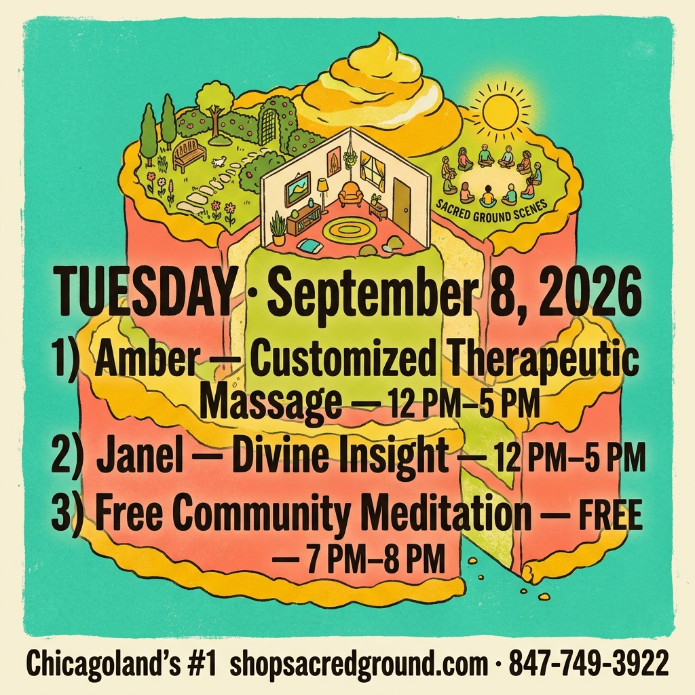
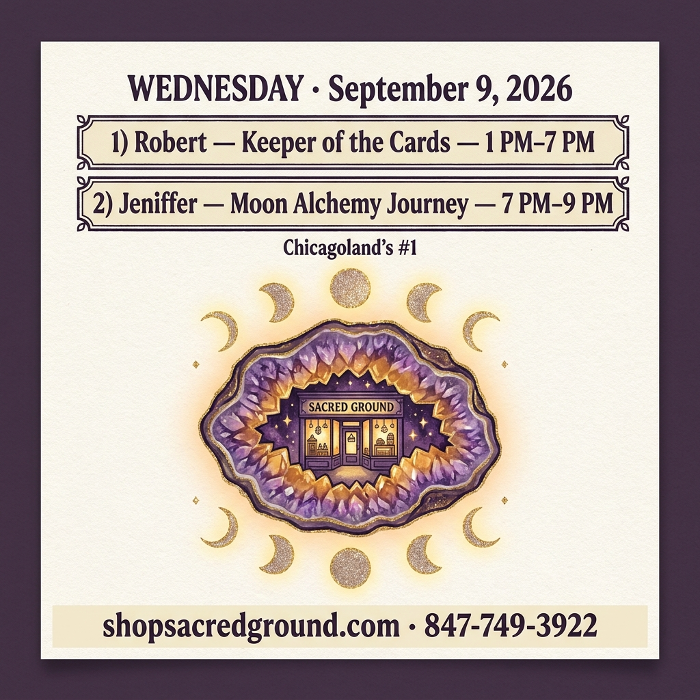
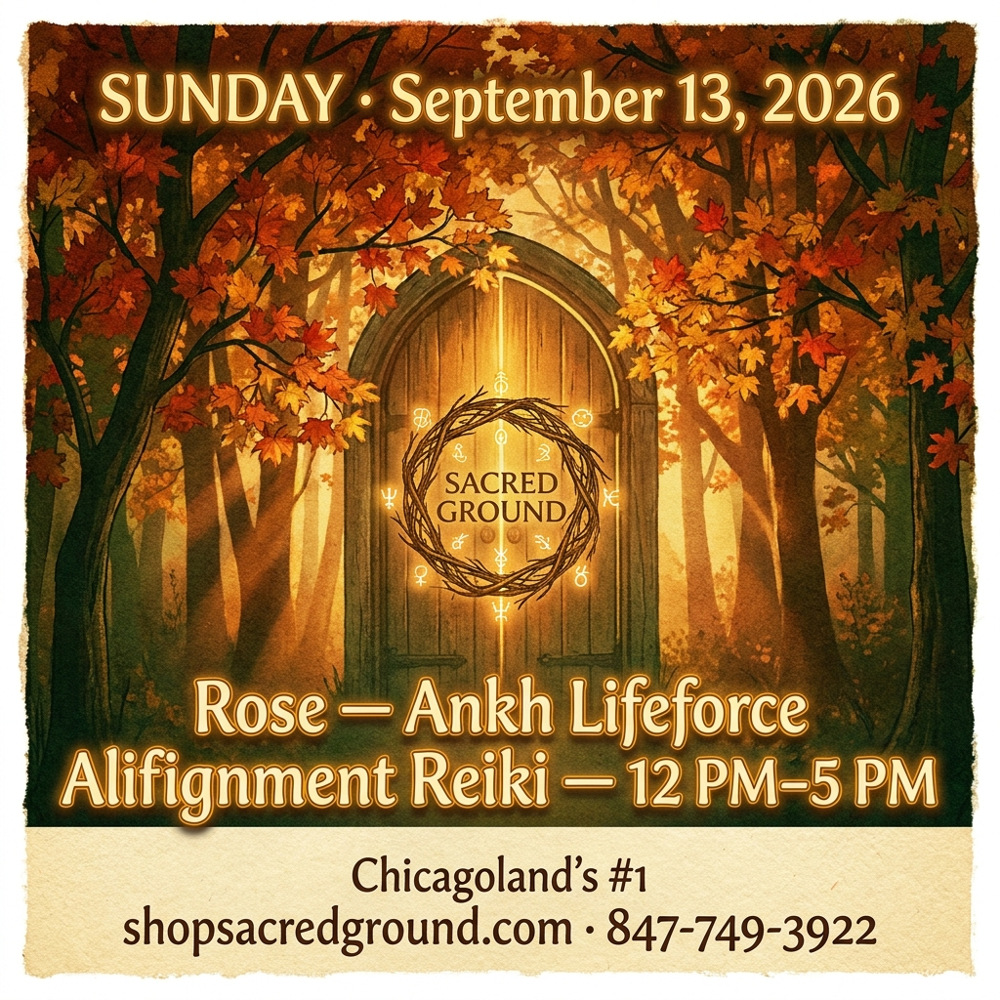
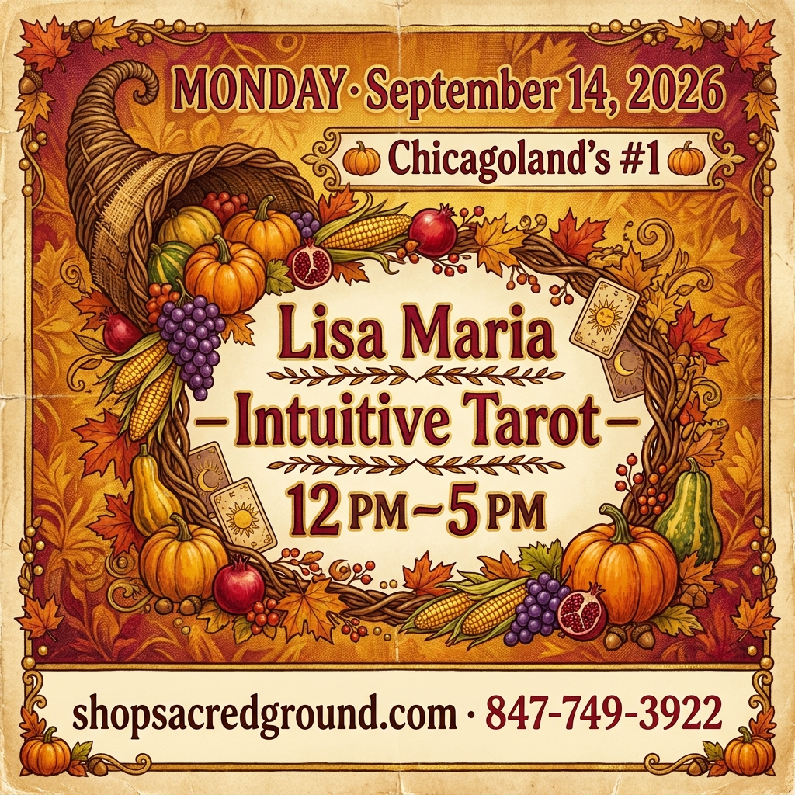
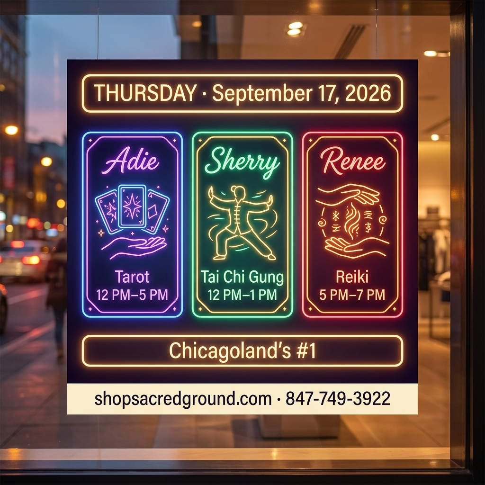
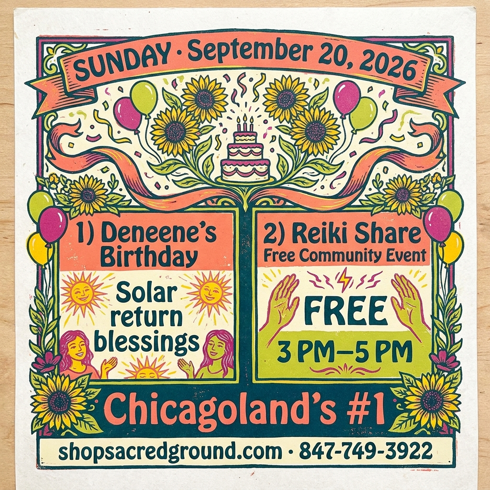
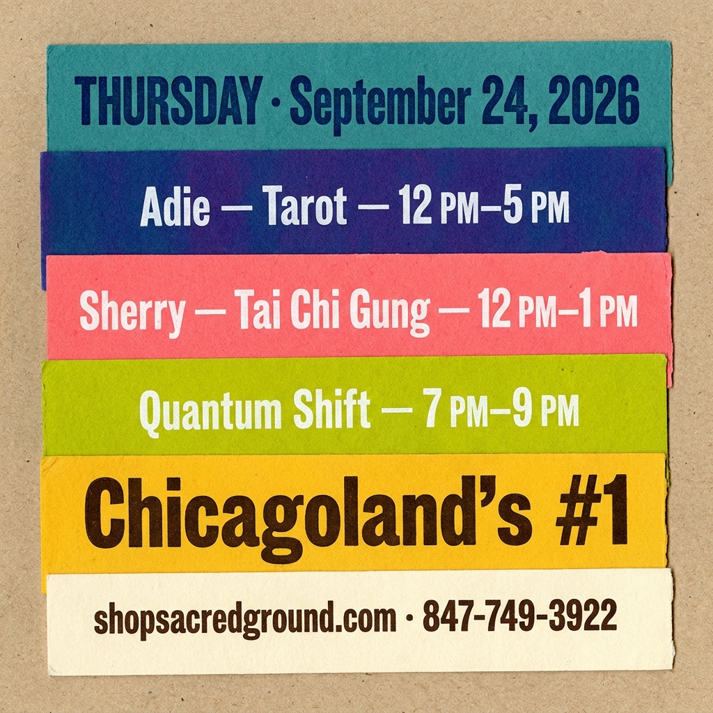
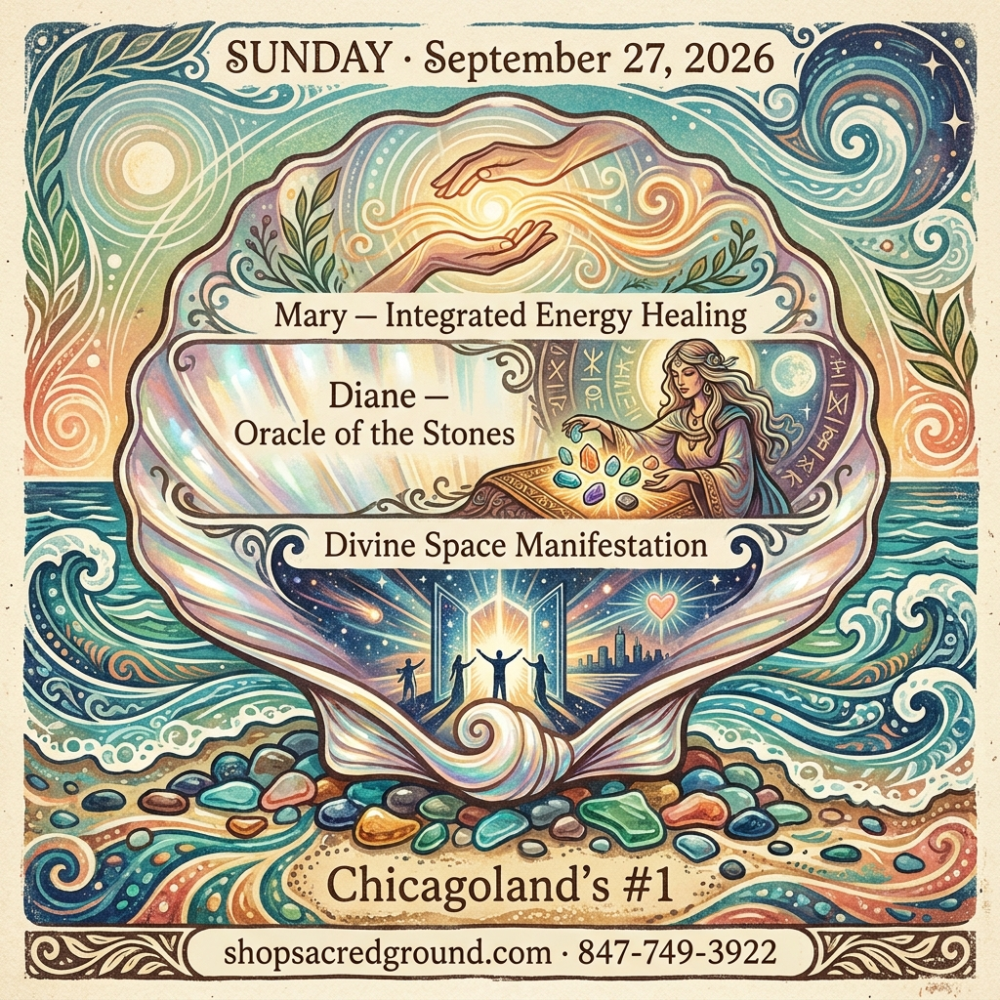
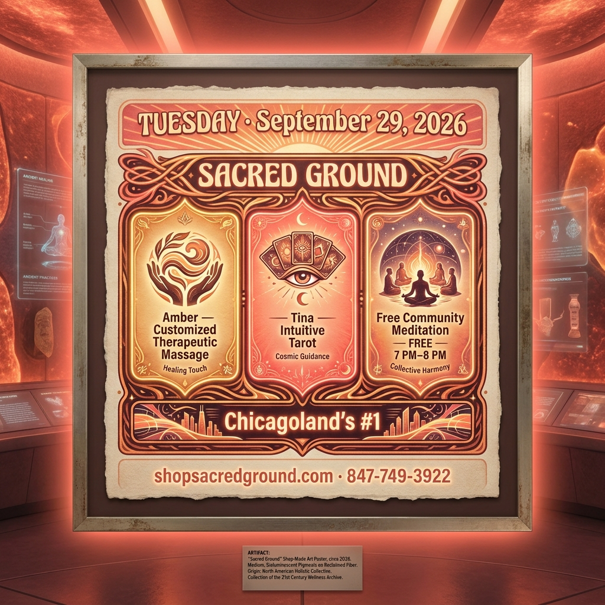
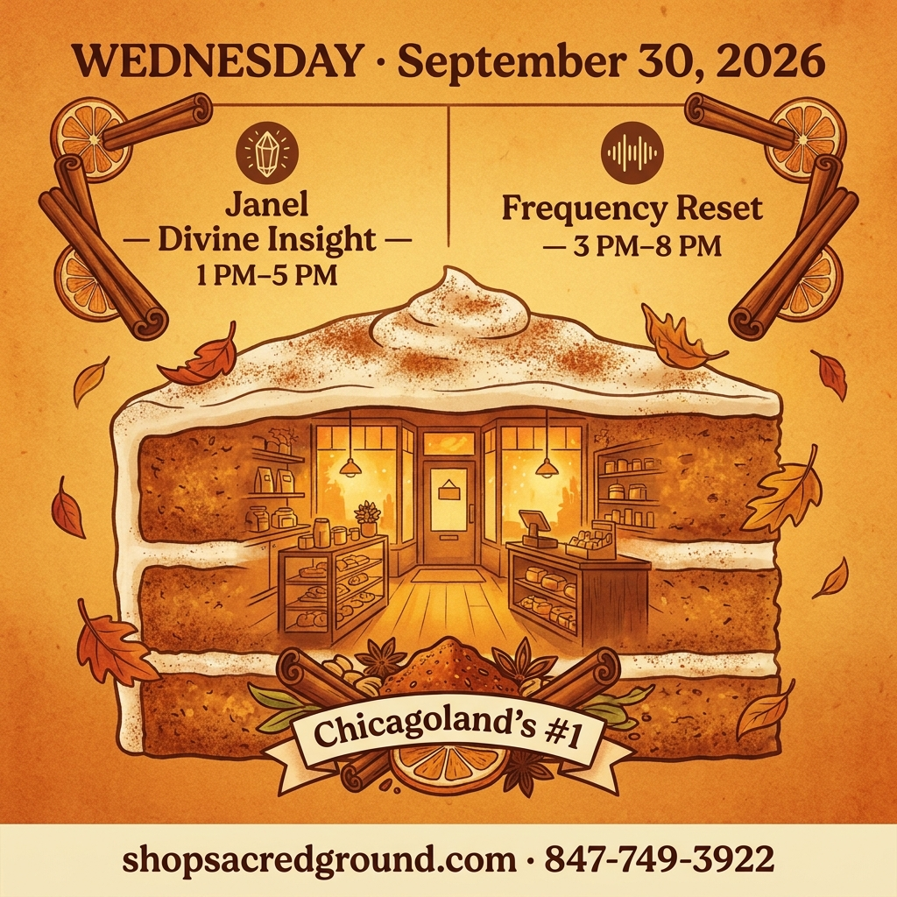

v5 had Pride: False — clean; Voted #1 Chicagoland OK

v5 had Pride: False — clean of Pride; missing moon imagery

v5 had Pride: True — PRIDE banner

v5 had Pride: True — PRIDE on rainbow subway line

v5 had Pride: True — Pride cursive

v5 had Pride: True — Pride once. Never Morning Social. + broadsheet

v5 had Pride: True — Pride on teal strip

v5 had Pride: True — rainbow pride flag icon

v5 had Pride: True — PRIDE ONCE. NEVER MORNING SOCIAL.

v5 had Pride: True — PRIDE ONCE. + rainbow button

v5 had Pride: True — PRIDE on infinity scroll

v5 had Pride: True — Pride once.

v5 had Pride: True — Pride once. + Never Morning Social. Victorian

v5 had Pride: True — Pride once. in footer

v5 had Pride: True — Pride + rainbow icon

v5 had Pride: True — PRIDE ONCE. NEVER MORNING SOCIAL.

v5 had Pride: True — Pride once. Never Morning Social.

v5 had Pride: True — Pride once. Never Morning Social. + Daily

v5 had Pride: True — PRIDE ONCE. NEVER MORNING SOCIAL.

v5 had Pride: True — PRIDE ONCE.